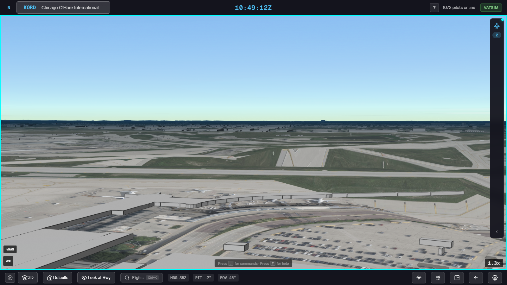
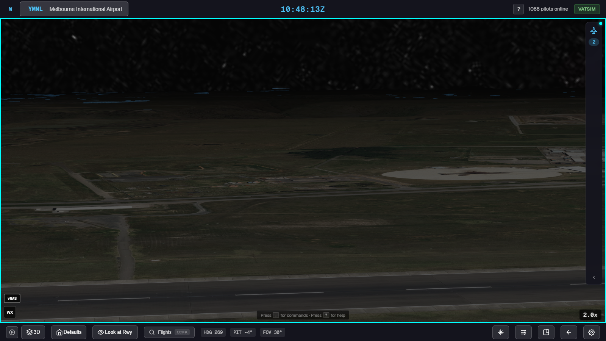
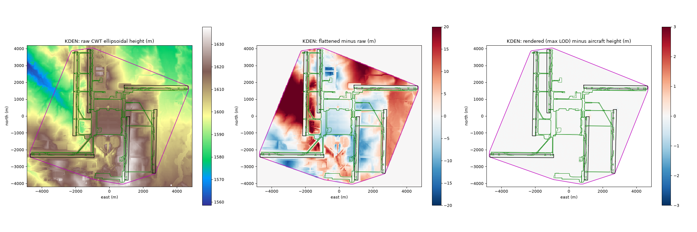
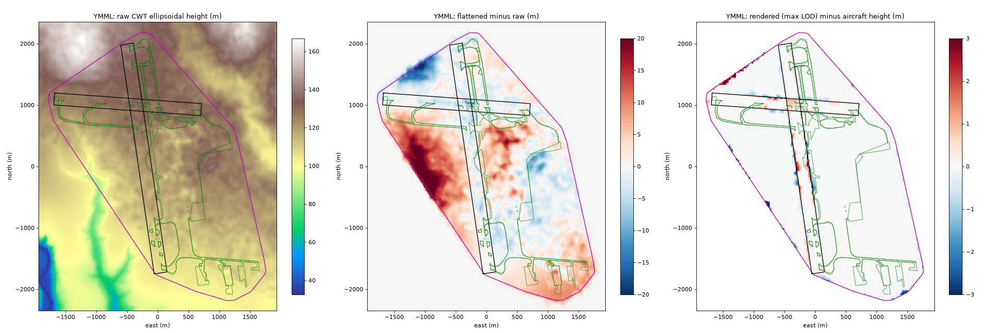
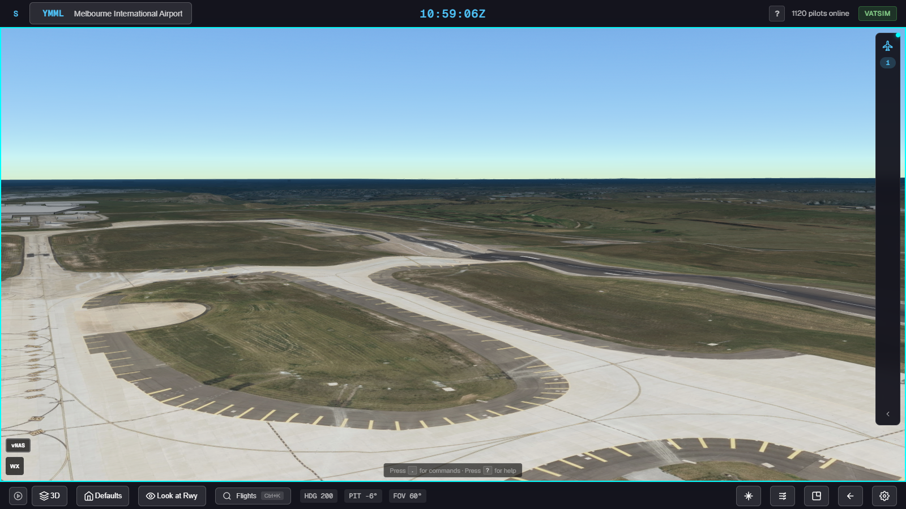
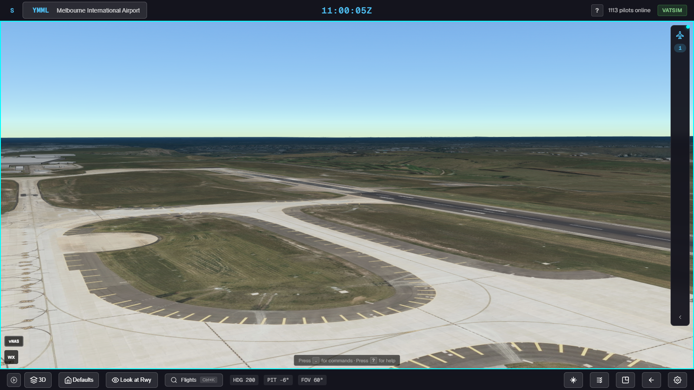
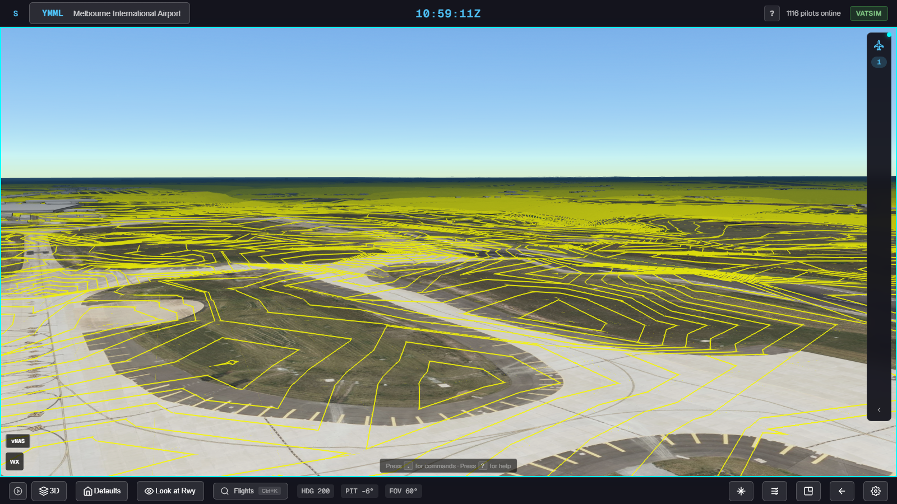
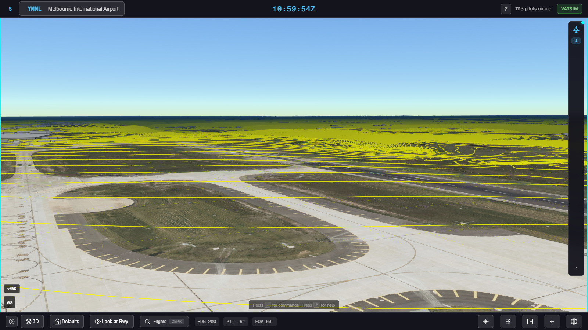
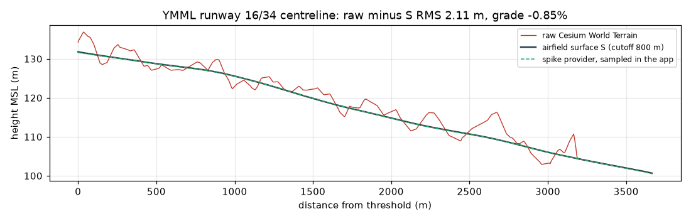

TC3D-210: fix the terrain flattening, or replace it
Left: what the current flattening does today, and the defects TC3D-200 to TC3D-209 would fix. Right: the greenfield smoothing spike (TC3D-194, branch spike-terrain-greenfield) at the same airports.
A. Fix the current flattening
Ten booked defects (TC3D-200..209); worst three: sea-level trench on a missing runway-end elevation (KORD), dead taxiway ramp (11 m cliff at KDEN, 4.6 m at YMML), fill polygon levelling valleys and hills by up to 40 m.
Keeps today's architecture; each defect is a bounded fix.

KORD 09C/27C: missing end elevation flattens the runway towards sea level.

YMML south-west: the fill polygon levels the terrain around the field.

KDEN height change (heatmap).

YMML height change (heatmap).
B. Replace with greenfield smoothing
One pavement-weighted smooth surface per field, pinned to published threshold elevations; strength chosen per airport against Annex 14 slope limits (6 of 10 measured airports left untouched).
YMML spike: grades within 3 cm of published, steepest 50 m slope 13.1% to 1.2%, aircraft within 15 mm of the drawn ground.
Costs: a Web Worker for the fit (3.1 s on the main thread today), a cheaper smoothing search, and the unexplained tower-camera lift at YMML (187 m to 357 m).

YMML in the app, raw terrain.

YMML in the app, smoothed.

Raw, contours.

Smoothed, contours.

YMML 16/34 centreline: raw terrain (red, 2.1 m RMS bumps) against the smoothed airfield surface and the spike provider as the app samples it.